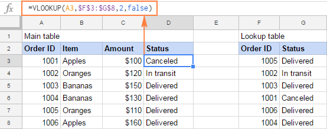

Learning to use different formulas in spreadsheet
Contents of Unit 9
What will I learn?
- What is a spreadsheet
- How and why spreadsheet are used
- Improve productivity and accuracy
- Analyse data
- Perform calculations
- Cost modelling
- Creating timetables and results
- Stock control
What skills will I obtain?
- To use a variable formula like lookups and Vlookups
- To do a different calculation in order to make the process easy for business and many more.
How will I be assessed?
- You will be need to create a spreadsheet using different formulas in order to
get distinction in the assignments.